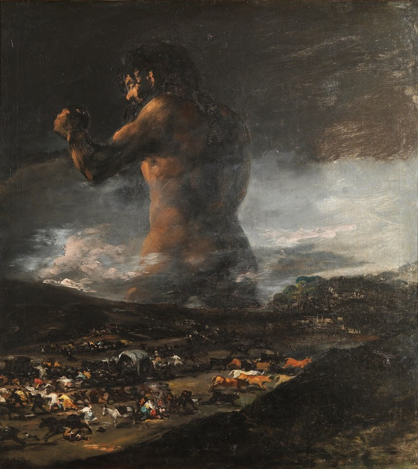
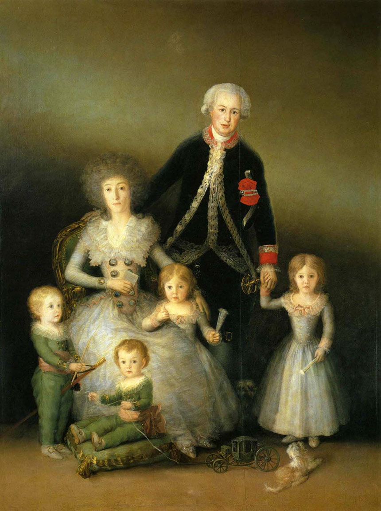
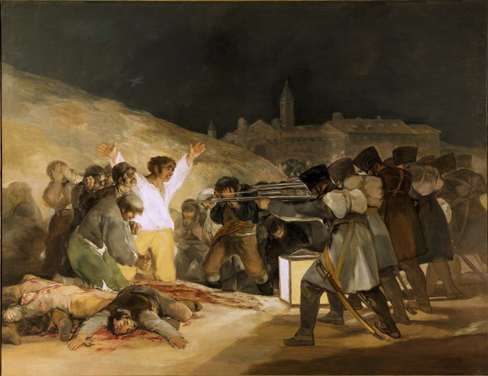
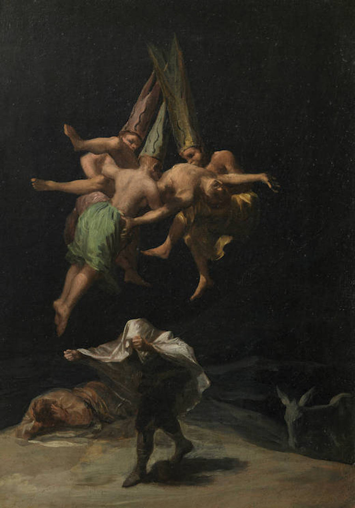
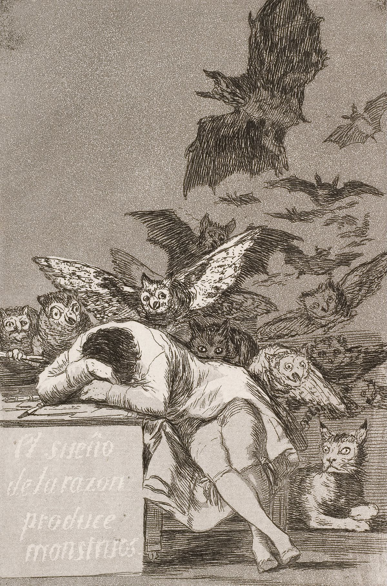
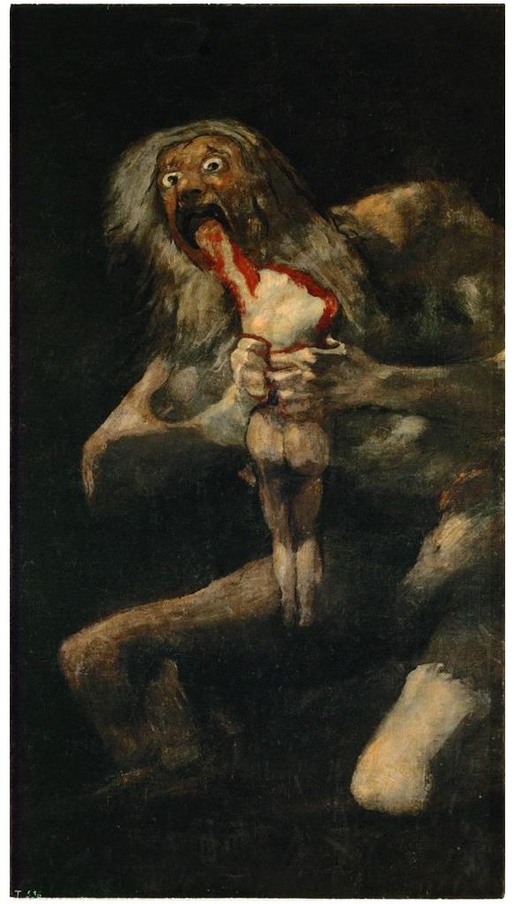

Francisco Goya
Considerato il pioniere dell’arte moderna, è stato uno dei più grandi pittori spagnoli vissuti tra la fine del XVIII secolo e dell'inizio del XIX. I suoi dipinti, i suoi disegni e le sue incisioni riflettevano gli sconvolgimenti storici in corso e influenzarono i più importanti pittori coevi e del secolo successivo. Goya è spesso indicato come l'ultimo degli antichi maestri e il primo dei moderni.
     Homepage